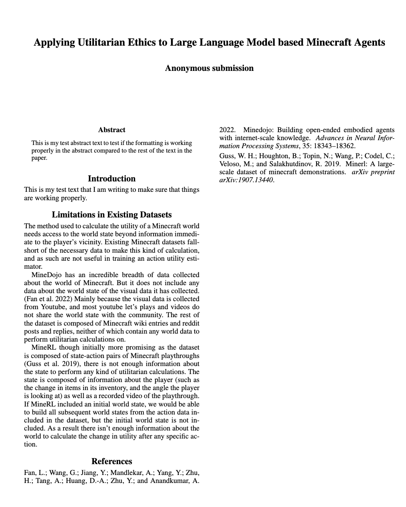

I've created the overleaf document, and dropped in a section I wrote a few months ago after only a couple months into this project. This to me is a signal that I am in the final-stretch of this project. I need to actually run the trials (simulations), and write the paper!

Creating the overleaf document feels like a milestone, even if it has not truly changed anything.